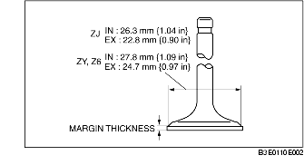
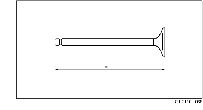
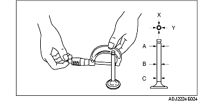
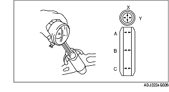
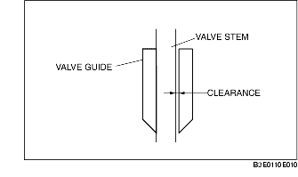
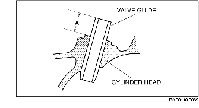

Valve, valve guide inspection
1. Measure the valve head margin thickness using a vernier caliper.

2. Measure the length of each valve using the vernier caliper.

- • If it is less than the minimum specification, replace the valve.
Standard valve length (mm {in})
Minimum valve length (mm {in})
3. Measure the stem diameter of each valve using the micrometer. Measurement positions total six and they are in the X and Y directions at the three points (A, B, and C) as shown in the figure.

- Standard valve stem diameter
- IN: 5.470-5.485 mm {0.2154-0.2159 in}
- EX: 5.465-5.480 mm {0.2152-0.2157 in}
- Minimum valve stem diameter
- IN: 5.424 mm {0.2136 in}
- EX: 5.419 mm {0.2134 in}
4. Measure the inner diameter of each valve guide using the caliper gauge. Measurement positions total six and they are in the X and Y directions at the three points (A, B, and C) as shown in the figure.

5. Calculate the clearance between the valve stem and the valve guide by subtracting the inner diameter of the valve guide from the outer diameter of the corresponding valve stem.

- Standard clearance
- IN: 0.025-0.060 mm {0.0010-0.0023 in}
- EX: 0.030-0.065 mm {0.0012-0.0025 in}
- Maximum clearance
- 0.10 mm {0.04 in}
6. Measure the protrusion height (dimension A) of each valve guide using the vernier caliper.
